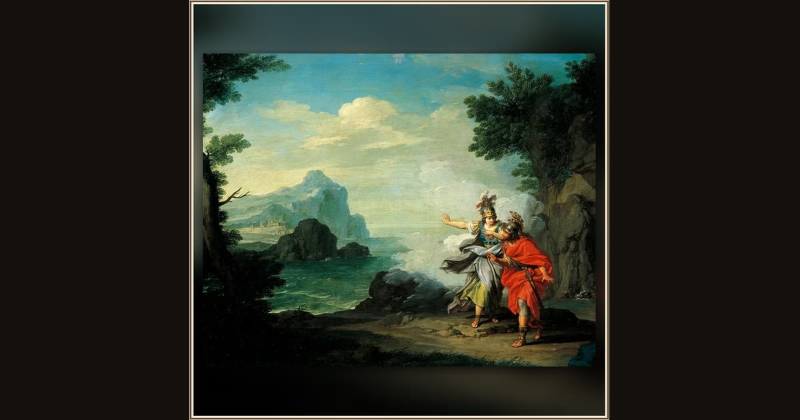

Athena Revealing Ithaca to Ulysses
Giuseppe Bottani · 18th century · Musei Civici di Pavia – Pinacoteca Malaspina · Pavia, Italy
The mist melts away as Athena points past the trees — and Odysseus finally sees that this unfamiliar shore is his own Ithaca. Explore its place in Book XIII of the Odyssey.